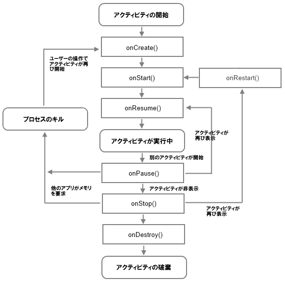
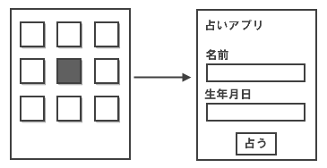
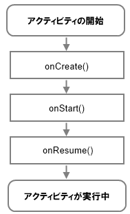
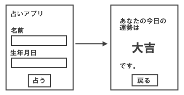
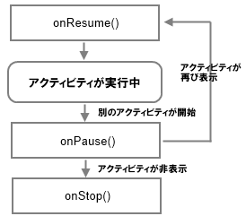
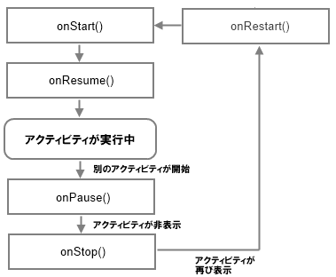
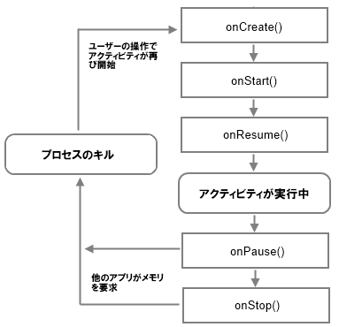
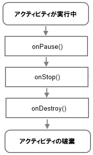

アクティビティのライフサイクル
Androidの画面からアプリケーションが起動されると最初のアクティビティが開始し画面に表示されます。同じアプリの別のアクティビティ(画面)が表示されれば最初のアクティビティは隠れますし、別のアプリが起動して違う画面が表示されることもあります。このように1つ1つのアクティビティは表示されたり隠れたりといったことを繰り返します。このようなアクティビティが開始されて、そして破棄されるまでをアクティビティのライフサイクルと呼んでいます。
下記の図はアクティビティのライフサイクルと、状態が変わる時に呼び出されるメソッドの一覧です。

一見すると複雑な図ですが、実際はそれほど難しいものではありません。順に解説していきます。
アプリを起動しアクティビティが表示
Androidのホーム画面からアプリのアイコンをクリックするとアプリが起動し、最初のアクティビティが画面上に表示されます。

この時、このアクティビティは「実行中」の状態となります。先程のライフサイクルで言えば、下記の部分です。

「アクティビティが開始」されると「onCreate()」メソッド、「onStart()」メソッド、「onResume()」メソッドが順に呼ばれて「実行中」の状態になります。メソッドが3つに分かれているのは、実行中になるまでに厳密には状態が細かく分かれているためで、その状態に応じて処理を行えるように分かれています。
別のアクティビティが開始される時
同じアプリの別のアクティビティが開始されようとしたり、別のアプリのアクティビティが開始されようとすると、元のアクティビティは他のアクティビティによって見えなくなります。

この時、別のアクティビティが画面に表示される前に「onPause()」メソッドが呼び出されます。

アクティビティが表示されなくなる前に行う処理をこのメソッドで行います。
ここで元のアクティビティが再び画面に表示される場合は、右のルートを通って「onResume()」メソッドが呼ばれた上で「実行中」の状態に戻ります。
新しいアクティビティが画面に表示され元のアクティビティが見えなくなった場合は、下のルートを通って「onStop()」メソッドが呼ばれて「停止中」の状態となります。
再び表示される時
アクティビティは他のアクティビティの裏に隠れて表示されていない状態でも終了してはいません。停止の状態のままです。ユーザーによって非表示の状態から再び画面に表示されようとした場合には、まず「onRestart()」メソッドが呼ばれた後、「onStart()」メソッドと「onResume()」メソッドが呼ばれて再び実行中となります。

ただ注意点があります。停止中でもアクティビティは終了はしていないのですが、Androidのメモリが足りなくと、メモリを確保するために実行中でないアクティビティが強制的に終了となる場合があります。

この場合、アクティビティはいったん終了します。この状態からユーザーが再びアクティビティを表示させようとした場合は「onCreate()」メソッドから改めて呼び出されることになります。
アクティビティの終了
アクティビティが終了する場合には最後に「onDestroy()」メソッドが呼ばれて終了します。

終了となる場合は色々なパターンがありますがが、例えばホーム画面からアプリが起動してアクティビティが表示されます。その後、別のアクティビティが開始されるといったんアクティビティ表示されなくなりますが、ユーザーがAndroidのBackキーを押すことで1つ前に戻り再びアクティビティが画面に表示されます。ここでさらにBackキーを押すとさらに1つ前に戻りホーム画面が表示されます。この時、アクティビティは終了となります。
つまり他のアクティビティが表示されたことによって見えなくなっても直ぐに終了とはならないですが、アクティビティが開始される前の状態に戻るとアクティビティはいったん終了となります。
以上のようにアクティビティは開始された後で表示されたり他のアクティビティの後ろに隠れたりといった状態の変化を繰り返していきます。その度に決められたメソッドが呼び出されます。あるメソッドが呼ばれるタイミングで何か実行したい場合には、アクティビティメソッドの中でメソッドをオーバーライドすることで実現します。
コールバックメソッド
先程のライフサイクルの図では色々なメソッドが出てきましたが、これらはコールバックメソッドと呼ばれるものです。Activityクラスでそれぞれ定義されており、アクティビティがある状態になった時に自動的に呼び出されて処理が実行されます。
例えばコールバックメソッドの一つである「onCreate」メソッドはActivityクラスで次のように定義されています。
onCreate protected void onCreate (Bundle savedInstanceState)
Called when the activity is starting. This is where most initialization should
go: calling setContentView(int) to inflate the activity's UI, using
findViewById(int) to programmatically interact with widgets in the UI, calling
managedQuery(android.net.Uri, String[], String, String[], String) to retrieve
cursors for data being displayed, etc.
You can call finish() from within this function, in which case onDestroy() will
be immediately called without any of the rest of the activity lifecycle (onStart(),
onResume(), onPause(), etc) executing.
Derived classes must call through to the super class's implementation of this
method. If they do not, an exception will be thrown.
Parameters:
savedInstanceState If the activity is being re-initialized after previously
being shut down then this Bundle contains the data it most recently supplied
in onSaveInstanceState(Bundle). Note: Otherwise it is null.
もし自分で作成したアクティビティで、onCreateメソッドば呼ばれるタイミングで何らかの処理を行いたい場合は、onCreateメソッドをオーバーライドします。
@Override
protected void onCreate(Bundle savedInstanceState){
super.onCreate(savedInstanceState);
/* 行いたい処理を記述 */
}
※ 先頭に付いている @Override はアノテーションと呼ばれるJavaで用意されている機能で、@Overrideを付けたメソッドはオーバーライドされたメソッドであることを宣言しています。
最初にスーパークラスのメソッドを呼び出した後、そのメソッドが呼び出されたときに行いたい処理を記述していきます。
この記述をどこかで見たことがあると思いますが、これはEclipseなどでAndroidのプロジェクトを新規に作成した時に自動で作成されたソースコードと同じです。
package jp.javadrive.hello;
import android.app.Activity;
import android.os.Bundle;
public class HelloActivity extends Activity {
/** Called when the activity is first created. */
@Override
public void onCreate(Bundle savedInstanceState) {
super.onCreate(savedInstanceState);
setContentView(R.layout.main);
}
}
この中の「setContentView(R.layout.main);」の部分が自分で追加した処理の部分です。また別のところで詳しく解説しますが、これは別のファイルに定義したボタンやテキストなどを画面内に配置するための処理が記述されています。
ライフサイクルを再度見て頂ければお分かり頂けるようにonCreateメソッドはアクティビティが開始された時に最初に呼び出されるメソッドです。このメソッドの中でアクティビティ内に表示するテキストやボタンを配置を行っているわけです。
今回はonCreateメソッドについて記載しましたが、他のメソッドについても同じです。アクティビティのライフサイクルに合わせて、何らかの処理を行いたい場合は、その時呼び出されるコールバックメソッドをオーバーライドすることで処理を行わせることができます。次のページでは実際に各メソッドをオーバーライドして、どのようにメソッドが呼び出されるのかを確認します。
( Written by Tatsuo Ikura )

著者 / TATSUO IKURA
初心者～中級者の方を対象としたプログラミング方法や開発環境の構築の解説を行うサイトの運営を行っています。